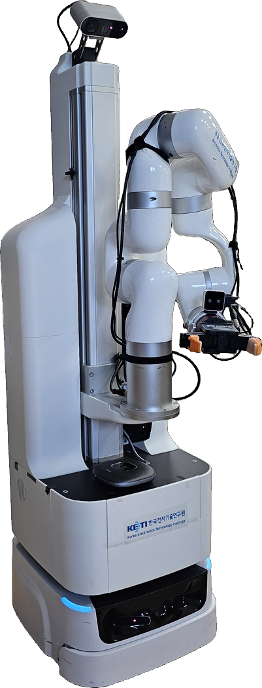
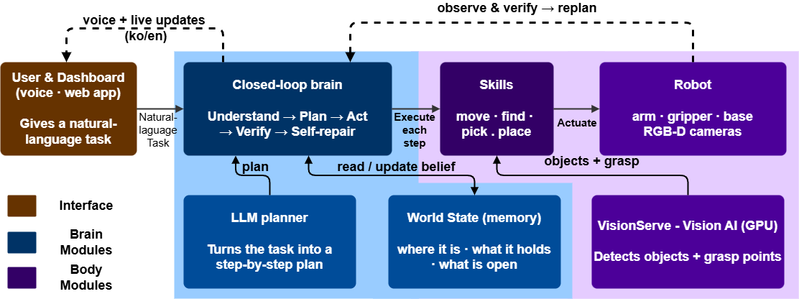
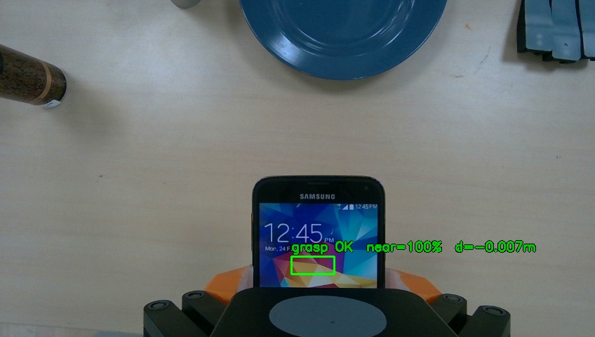

Architecture
Note
Media checklist for this page. Slots are already laid out below; just drop files with these exact names and they render automatically.
Diagrams — export each tab of the master
robotapp/diagrams/robotapp.drawio (click the tab, then draw.io ▸ Export
as ▸ PNG, scale 2x) into source/contents/images/:
draw.io tab |
target file |
|---|---|
|
|
|
|
|
|
Photos (JPG/PNG) go in source/contents/images/ and videos
(WebM/MP4) in source/_static/videos/. Robot photos, camera frames and
the two demo videos were extracted from robotapp/data/. The only slots
still empty are the dashboard screenshot on Operator dashboard
(images/shot_dashboard.png) and the plan-panel screenshot on
Cognition: planning & verification (images/shot_plan_panel.png).
Overview
The care robot is an assistive mobile manipulator that turns a spoken or typed
request (“bring me the cup from the table”) into a sequence of real robot
actions, checks each step, and repairs the plan on the fly when something goes
wrong. It is built as a robot-agnostic runtime (robot_agent) driving a
concrete robot package (kcare_robot), with an optional multi-user
web dashboard (robotapp) and a pluggable LLM task planner
(pyplanner / SAGE).
{kind=link}

The care robot: KAAIR 6-DOF arm + lift on a mobile base, two-finger/suction gripper, pan-tilt head, and wrist + head RGB-D cameras.
See it in action — two real manipulation runs recorded from an external
webcam (pick the phone and pick the coffee can):
Three operating modes
The same robot can be driven three ways — they all reach the same skills through the same registry, so behaviour is identical:
Mode |
Entry point |
Talks to |
|---|---|---|
UI / HTTP |
|
|
CLI |
|
bootstraps the robot in-process |
Python API |
|
bootstraps the robot in-process |
The dashboard is optional: the robot is fully operable from the CLI or Python API. Two clients driving the same robot at once is unsafe — the UI documents this for operators.
System overview
At a glance, a command flows top-down from the operator to the hardware and feeds back up through verification and voice:
{kind=link}

High-level flow: User → robot_agent brain (understand → plan → act → verify → self-repair) → skills → VisionServe + robot, with the SAGE planner and world-state memory feeding the brain.
The system splits cleanly into two halves, each with its own detailed diagram and page:
the robot-agnostic cognition half (closed-loop driver, world state, verifier, SAGE planner and LLM) — see Cognition: planning & verification;
the robot-specific embodiment half (skills, perception/grasp pipeline, VisionServe and the ROS2 hardware over
pyconnect) — see Embodiment: skills, vision & hardware.
Together they span six tiers: interaction (dashboard/CLI/API) · robot_agent
runtime · pyplanner/SAGE + LLM backend · kcare_robot skills ·
pyconnect transport · external processes (VisionServe GPU server and the
ROS2 hardware).
Cognition: the closed-loop brain
robot_agent runs a bounded closed loop rather than executing a fixed
plan blindly. Each step is perceived, mapped to a skill, executed, and
verified; on failure the planner repairs only the failed sub-goal’s suffix.

UnifiedAgent → ClosedLoop (Perceive → Plan → Map · ActionMapper
→ Act · SkillRegistry → Verify · StepVerifier; ✓ pass advances,
✗ fail triggers Replan) with WorldState, Announcer and
RunLogger, backed by SAGE over the Planner Protocol.
Key pieces:
WorldState — a persistent symbolic belief the robot carries across runs:
arrived·found·holding·opened·on·found_pose. Onlyarrivedis sensor-derived; the rest are beliefs (no gripper sensor).Layered verification (
StepVerifier) — cheap to expensive:isdone(did the skill report success?) →symbolic(do the step’s preconditions/effects hold?) →VLM(optional vision check). A never-fail guard keeps a broken vision check from stalling the loop.SAGE planner (
pyplanner) — the paper’s contribution, reached through a decoupledPlanner Protocol(get_planner): hierarchical decomposition, hybrid memory (curated seed + live episodes, Chroma/Jaccard), a zero-token symbolic gate that verifies steps before execution, and suffix-only repair that regenerates just the failed sub-goal — recovering from failures with far fewer LLM calls than whole-plan replanning.LLM backend — a single open-weight model (Ollama / OpenAI / Gemini) over HTTP, seeded for reproducibility.
Embodiment: skills, vision, hardware
The robot-specific half lives in kcare_robot (skills + name map + per-site
configs), reaching hardware through pyconnect and a separate GPU vision
server.

23 skills (Navigation / Perception / Manipulation / Low-level), the
perception-and-grasp pipeline, pyconnect transport, the VisionServe
GPU server, and the ROS2 robot hardware.
Skills — grouped as Navigation (
move, Nav2moveb,turn…), Perception (find,detect,get3d,grasp_succeed), Manipulation (pick,place,open_drawer…, withfine_moveself-correction), and Low-level (arm/lift/head/grip).Perception & grasp pipeline —
fetch_camera_data(head/wrist RGB-D) →VisionServe.predict(GroundingDINO / GroundedSAM / grasp-gd) →select_target_*→get3d(/create_object_marker) → a 3D resultins{loc_3d, grasppose, box, score}that drives the grasp.VisionServe — a separate GPU process the robot talks to over TCP/HTTP
:11435; in: RGB + text prompt, out: detections / masks / grasps.
{kind=link}

Wrist-camera view at the end of a fine_move approach: the grasp check
reports grasp OK, near=100%, d=-0.007m just before closing the gripper.
Walkthrough: one command, end to end
“Bring me the cup from the table”:
Dashboard / CLI sends the natural-language task to
robot_agent.UnifiedAgent translates (vi/ko → en) and starts the
ClosedLoop.Perceive reconciles
WorldStatefrom localization and observes the scene.Plan — SAGE returns steps (
MoveTo Table→Find Cup→Pick→MoveTo User→Place).For each step: Map to a skill (
ActionMapper) → Act (SkillRegistry.execute) → Verify (StepVerifier).On success the belief updates and the loop advances; the Announcer speaks a milestone and RunLogger appends a JSONL record. On failure, Replan splices a repaired suffix and execution continues.
Note
🎥 Optional video slot — drop _static/videos/demo_full_task.mp4 (also
used at the top of this page) to show this walkthrough on the real robot.
Where to go next
Get started — install and run the stack.
Manual — the full skill reference.
ROS2-based Framework — the
pyconnectROS2 node framework.Examples — minimal, copy-paste code samples.